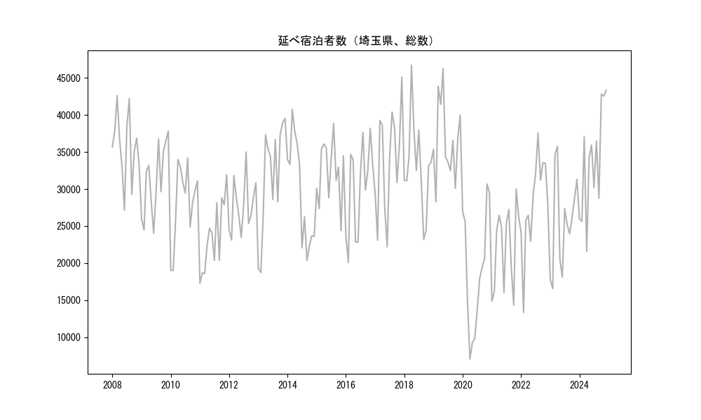
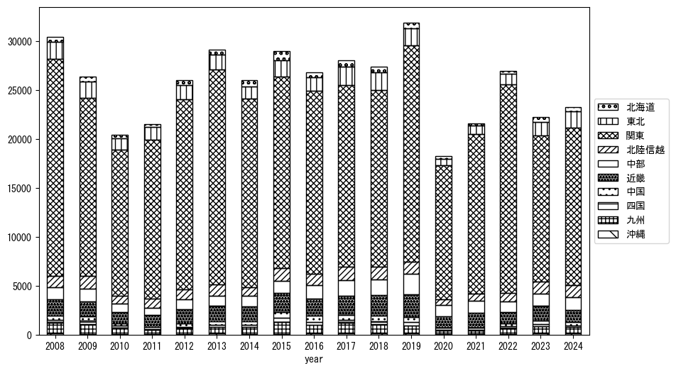
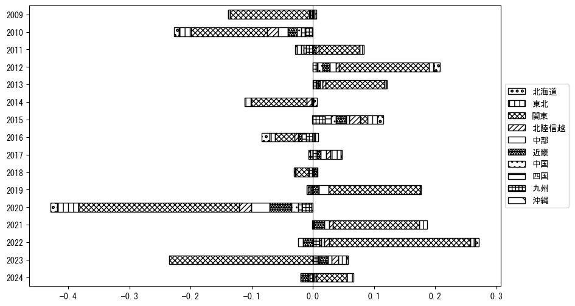
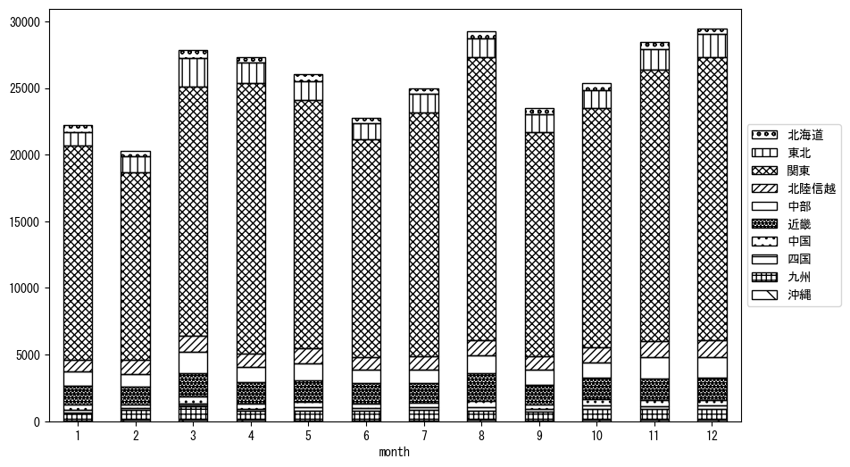
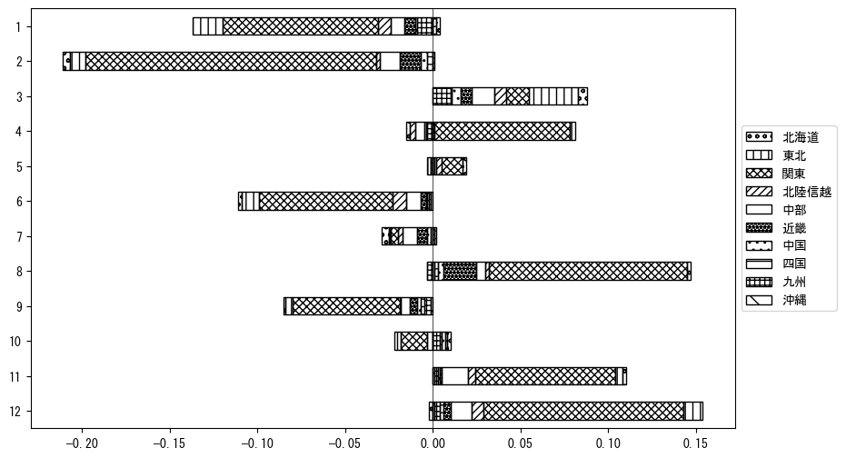

-
トップ
-
埼玉県
埼玉県
１．延べ宿泊者（総数）の推移
時系列グラフ

図１：埼玉県内の従業員数100人以上の宿泊施設での延べ宿泊者数（国外、居住地不詳を含む総数）。
基本統計量
表１：従業員数100人以上の宿泊施設での延べ宿泊者の総数（国外、および居住地不詳を含む）に関する基本統計量。単位は人。平均は１か月あたりの平均値を表す。図１に対応。
| 2008年 |
35,690 |
4,600 |
27,138 (6月) |
42,635 (3月) |
| 2009年 |
31,134 |
4,861 |
24,033 (6月) |
37,831 (12月) |
| 2010年 |
28,257 |
5,225 |
19,007 (2月) |
34,185 (8月) |
| 2011年 |
23,601 |
4,748 |
17,268 (1月) |
31,907 (12月) |
| 2012年 |
27,719 |
3,578 |
23,111 (2月) |
35,014 (8月) |
| 2013年 |
31,717 |
7,399 |
18,736 (2月) |
39,538 (12月) |
| 2014年 |
29,469 |
7,127 |
20,361 (9月) |
40,760 (3月) |
| 2015年 |
32,440 |
4,175 |
24,384 (11月) |
38,866 (8月) |
| 2016年 |
30,138 |
6,218 |
20,104 (2月) |
38,217 (11月) |
| 2017年 |
33,753 |
7,180 |
22,198 (6月) |
45,100 (12月) |
| 2018年 |
33,128 |
6,188 |
23,207 (9月) |
46,742 (4月) |
| 2019年 |
36,597 |
5,439 |
28,283 (2月) |
46,265 (5月) |
| 2020年 |
18,779 |
8,120 |
7,034 (4月) |
30,679 (11月) |
| 2021年 |
22,115 |
5,577 |
14,321 (10月) |
30,026 (11月) |
| 2022年 |
28,137 |
6,346 |
13,319 (2月) |
37,554 (8月) |
| 2023年 |
25,513 |
6,462 |
16,563 (2月) |
35,777 (4月) |
２．宿泊者数の重心（年平均の推移）
図２：埼玉県内の従業員数100人以上の宿泊施設での宿泊者数（国外、居住地不詳を除く）の重心（年平均の推移）。
全画面表示
重心の前年平均からの移動距離と方位、および緯度・経度
表２：重心の前年平均からの移動距離と方位、および緯度・経度。図２に対応。
| 2008年 |
— |
— |
35.8896 |
138.8254 |
| 2009年 |
西北西 |
8.2km |
35.9184 |
138.7417 |
| 2010年 |
東南東 |
11.8km |
35.8798 |
138.8630 |
| 2011年 |
東 |
19.4km |
35.9052 |
139.0761 |
| 2012年 |
西北西 |
5.6km |
35.9212 |
139.0174 |
| 2013年 |
南西 |
2.2km |
35.9063 |
139.0016 |
| 2014年 |
北西 |
9.8km |
35.9609 |
138.9161 |
| 2015年 |
西 |
24.4km |
35.9827 |
138.6468 |
| 2016年 |
南南東 |
12.4km |
35.8797 |
138.6991 |
| 2017年 |
西北西 |
5.7km |
35.9078 |
138.6465 |
| 2018年 |
西南西 |
0.9km |
35.9048 |
138.6372 |
| 2019年 |
東南東 |
12.4km |
35.8734 |
138.7687 |
| 2020年 |
東南東 |
20.0km |
35.8341 |
138.9849 |
| 2021年 |
北北東 |
0.7km |
35.8398 |
138.9875 |
| 2022年 |
北東 |
10.5km |
35.9151 |
139.0581 |
| 2023年 |
西 |
31.8km |
35.9324 |
138.7059 |
運輸局別延べ宿泊者数
時系列（年平均）

図３：埼玉県内の従業員数100人以上の宿泊施設での１か月あたり平均宿泊者数（国外、居住地不詳を除く）の運輸局別内訳。
寄与度（前年からの変化率に対する）

図４：埼玉県内の従業員数100人以上の宿泊施設での運輸局別宿泊者数（国外、居住地不詳を除く）から求めた寄与度。
３．宿泊者数の重心（月別）
図５：埼玉県内の従業員数100人以上の宿泊施設での宿泊者数（国外、居住地不詳を除く）の重心（月別）。観測期間は2008年1月から2023年12月まで。
全画面表示
全期間（2008年1月～2023年12月）の平均と月別平均の比較
表３：全期間の平均から月別平均までの移動距離と方位、および緯度・経度。図５に対応。
| 全期間 |
— |
— |
35.9032 |
138.8485 |
| 1月 |
北東 |
2.3km |
35.9175 |
138.8670 |
| 2月 |
西 |
7.2km |
35.9025 |
138.7688 |
| 3月 |
北西 |
9.5km |
35.9737 |
138.7895 |
| 4月 |
東 |
11.3km |
35.8953 |
138.9737 |
| 5月 |
西北西 |
2.9km |
35.9099 |
138.8177 |
| 6月 |
南西 |
3.3km |
35.8832 |
138.8209 |
| 7月 |
東南東 |
5.6km |
35.8906 |
138.9090 |
| 8月 |
南東 |
5.8km |
35.8678 |
138.8953 |
| 9月 |
北東 |
3.7km |
35.9297 |
138.8726 |
| 10月 |
西 |
7.9km |
35.8967 |
138.7613 |
| 11月 |
南西 |
2.1km |
35.8923 |
138.8298 |
| 12月 |
南東 |
3.7km |
35.8791 |
138.8765 |
運輸局別延べ宿泊者数
月別平均（2008年1月～2023年12月）

図６：埼玉県内の従業員数100人以上の宿泊施設での宿泊者数（国外、居住地不詳を除く）の運輸局別内訳（月別）。
寄与度（全期間の平均から月別平均への変化率に対する）

図７：埼玉県内の従業員数100人以上の宿泊施設での運輸局別宿泊者数（国外、居住地不詳を除く）から求めた寄与度（月別）。
４．データのダウンロード
出典：観光庁「宿泊旅行統計調査」に収録された「施設所在地別、居住地別延べ宿泊者数（従業員数100人以上の施設）」
国土地理院「白地図（地理院タイル）」（図２と図５）